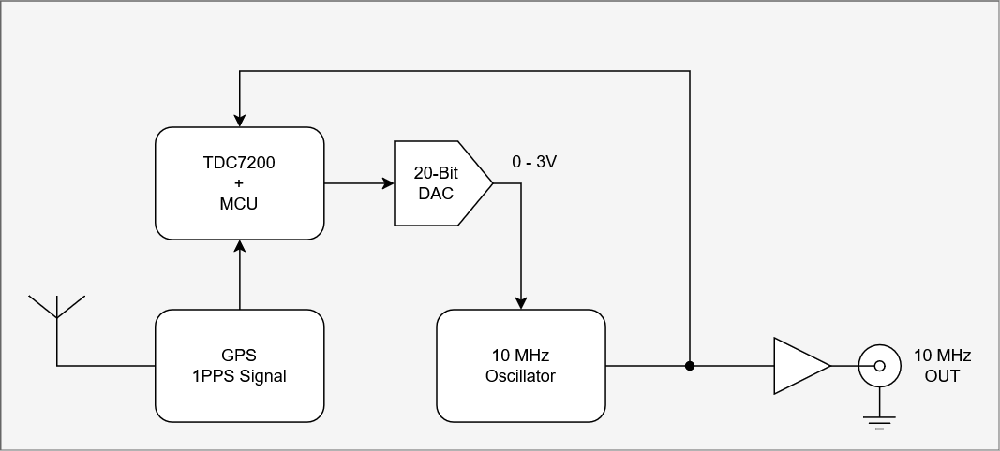
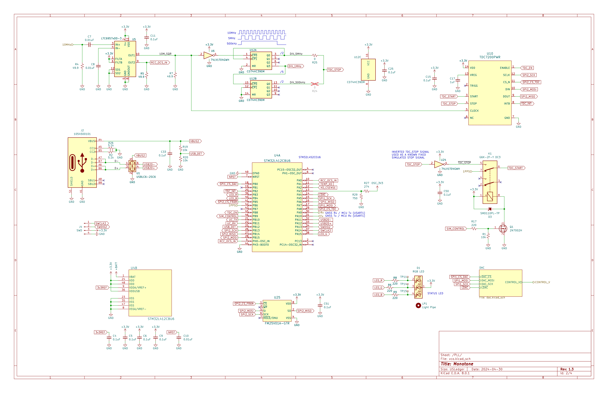
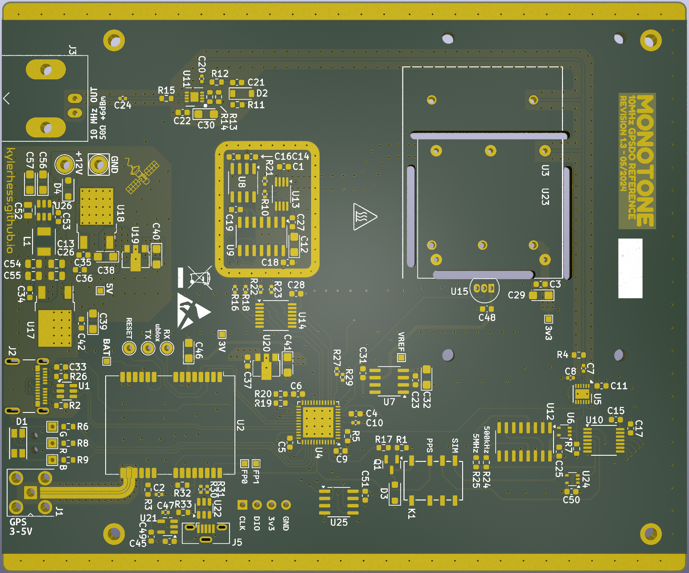

Kyle Hess - Huntsville, AL
MONOTONE: A 10 MHZ GPS-DISCIPLINED OSCILLATOR (GPSDO) FREQUENCY REFERENCE

February 5, 2023
In an effort to improve the accuracy of a recently acquired HP 5315B Frequency Counter, I decided to supply it with an external 10MHz reference source.
However, I do not own such a reference so I had to build one.
I started by selecting a very stable, tunable, ovenized, 10 MHz oscillator
(OH100-71003SV-010.0M). This oscillator should give pretty decent performance
on it's own, but of course will drift slightly due to temperature changes and aging.
The solution: Lock it to a GNSS reference timing signal with a Phase-Locked Loop (PLL).
The following projects served as great references for my own:
https://www.eevblog.com/forum/projects/diy-gpsdo-project-w-stm32-tdc7200/
https://hackerstuebchen.de/gpsdo-design-the-tic
https://www.eevblog.com/forum/projects/lars-diy-gpsdo-with-arduino-and-1ns-resolution-tic/
System Overview
Goals:
- Low phase noise -110 dBc/Hz (@10 Hz offset)
- Long-term stability better than 1E-12 (10 µHz)
- Fast start-up time
The basic idea for this system is to phase-lock an ovenized oscillator (VCOCXO) to the Pulse Per Second (PPS) signal provided by a GNSS receiver.
The PLL is accomplished by measuring the time from the rising edge of the PPS signal, and a reference signal from the VCOCXO.
Any amount of measured time is perceived as a phase error, which can be used to proportionally drive a DAC that ultimately tunes the VCOCXO frequency.

{kind=link}
Design
The overall board schematic is provided below. It contains two internal pages that detail the PLL circuit and the output signal buffering (see schematics further down).
The first thing you may notice: Wow, what's with all the linear regulators!? Yes, this might be overkill. One of my main goals with this project was to reduce the output
noise as much as possible. This means switching regulators are a no-go. I also wanted to isolate the digital supplies as much as possible from, say, the oscillator supply.
And the GPS USB power has it's own regulator... and... and... Anyway, my preliminary calculations tell me that the worst case power dissipation (around 1 W) will occur in the 5V regulator.
Given that most of the power is consumed by the VCOCXO heater, any self-heating should somewhat self-regulate... I think.
At the core of the time measurement circuit is the TDC7200
from Texas Instruments. This neat little chips allows us to measure the time between two signal edges with a resolution of 55 ps!
The two signals feeding the TDC7200 are the PPS signal from our GPS receiver, and a 500 kHz signal (which is divided down from the 10 MHz oscillator).
The PPS signal starts the timer counting, and the first positive 500 kHz edge stops it. This time value is then read by an STM32 over SPI
for further processing. Since the PPS signal has a significant amount of jitter on it (around 20 ns), it is necessary to average these measurements
over a very long period (like, 1000+ seconds). As measurements are received, they are added to a moving average.
This average error value is then used to drive a 16-Bit DAC
which is heavily filtered before it feeds the control signal of the oscillator.

The final output stage of the 10 MHz reference consists of a high-bandwidth buffer amplifier with an output impedance of 50 Ohms, AC-coupled to a coaxial U.FL output connector.
The output amplifier design is a little over-complicated, but was chosen on the basis of minimizing noise, and isolating the VCOCXO from load fluctuations.
This amplifier design does not require a negative power supply (so no charge pumps or switching regulators), but this warrants biasing the input signal to roughly
+3V. This prevents clipping of the output signal while allowing a full output swing of ~500mVrms (7dBm into 50 Ohms).

The board design was a simple two-layer PCB kept minimally small to reduce cost (although increasing the size may be required to thermally isolate the VCOCXO).
Controlled impedance traces were used for the GNSS antenna input, as well as for the 10 MHz sine signal.

{kind=link}